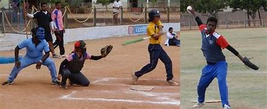
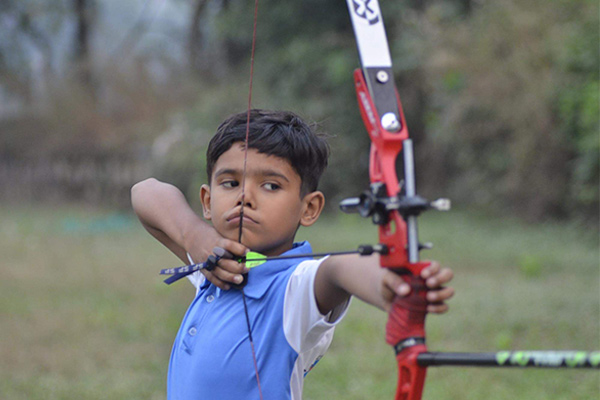

Softball

In a strategic move to diversify its sports offerings, RDT's Ananthapuram Sports Village (ASV) took a pioneering step by establishing a non-residential coaching center for softball in 2013. This marked the inception of a dynamic initiative designed to bring the sport of softball to the forefront of athletic pursuits in the region. The coaching center, an integral component of ASV's multifaceted approach to sports development, set out to provide daily coaching to 100 boys and girls, laying the groundwork for the popularization and growth of softball among the youth.
The non-residential coaching center became a hub of activity, attracting young enthusiasts eager to embrace the nuances of softball. ASV's commitment to providing high-quality coaching was reflected in the structured training sessions that focused on skill development, tactical understanding, and physical conditioning. The center emerged as a nurturing ground for budding talents, fostering a sense of discipline, teamwork, and sportsmanship among the participants. ASV's venture into softball, marked by the establishment of the coaching center and subsequent expansion to a residential program, underscored its commitment to fostering diverse sporting opportunities. It wasn't just about creating athletes; it was about nurturing well-rounded individuals who embodied the values of dedication, resilience, and teamwork.
Archery

In a bid to diversify its sports offerings and tap into the rich tapestry of traditional sports, the Rural Development Trust (RDT) initiated the Archery practice at the RDT Sports Centre, marking a significant milestone in the sports landscape of Ananthapuram. This endeavor was officially launched on the auspicious occasion of Sports Day at Ananthapuram Sports Village (ASV) on August 31, 2014, laying the foundation for a thriving Archery program that would soon capture the enthusiasm of aspiring archers in the region.
The inaugural launch of the Archery practice on Sports Day proved to be a resounding success, with 72 students enthusiastically registering on the same day. This overwhelming response underscored the latent interest and potential for the sport of Archery among the youth in Ananthapuram. It was a testament to the foresight of RDT in recognizing the need to diversify sporting opportunities and introduce traditional sports that not only enriched the cultural heritage but also provided avenues for skill development and athletic excellence. As the Archery program gained momentum, RDT took a significant stride by establishing a dedicated ground at ASV, signaling a commitment to providing a conducive environment for the practice and training of Archery. This marked the creation of a specialized space where archers could hone their skills, aiming for precision and mastery under the guidance of trained coaches. To further catalyze the growth of Archery in the region, ASV organized a three-week summer coaching camp in May 2015. This camp served as a platform to introduce Archery to a wider audience, drawing the participation of 20 non-residential players eager to explore the intricacies of the sport. The summer camp, facilitated by experienced coaches, became a focal point for initial training, offering participants a hands-on experience in archery techniques, form, and discipline.
The non-residential players who attended the summer camp were exposed to the fundamental principles of Archery, laying the groundwork for their journey into this age-old sport. The training sessions were designed to instill the core tenets of precision, focus, and control – essential attributes for success in Archery. Coaches, adept in the nuances of the sport, provided personalized guidance, ensuring that each participant received tailored instruction based on their skill level and potential.
The initiation of Archery practice at ASV went beyond merely introducing a sport; it became a catalyst for the holistic development of individuals. Archery, with its blend of physical and mental discipline, offered participants not only a pathway to sporting prowess but also a means of cultivating resilience, focus, and strategic thinking.